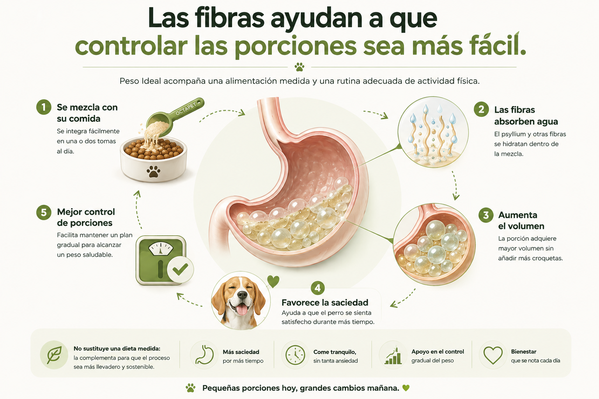
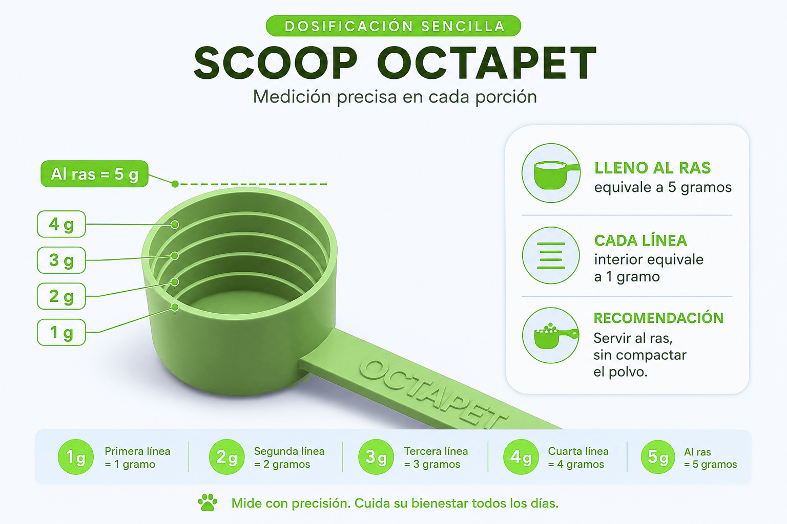
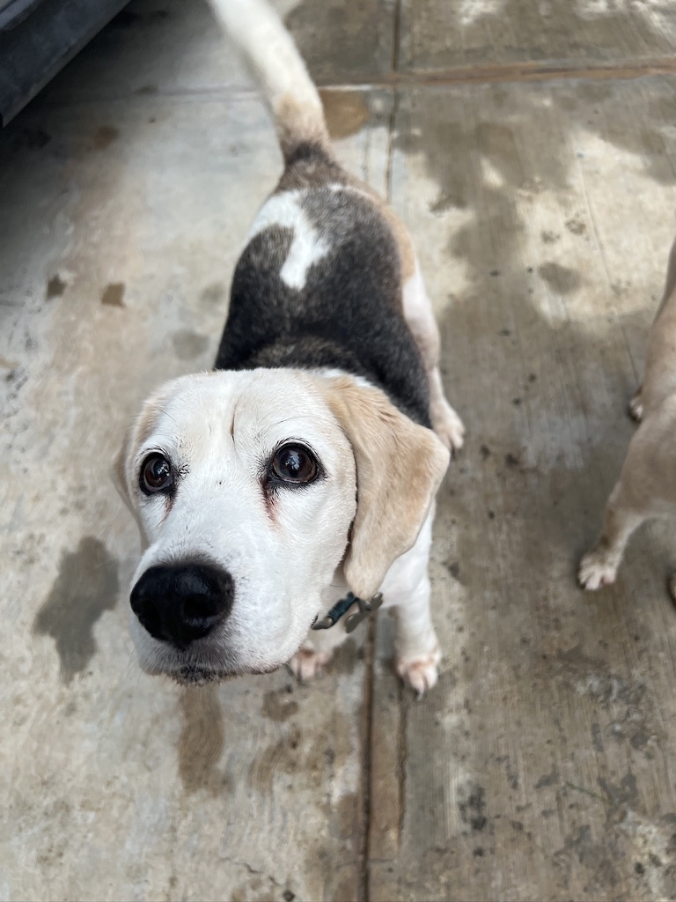

Fibra natural
Ayuda a dar estructura a la porción y acompaña la sensación de saciedad.
Favorece la saciedad y acompaña un plan gradual para mantener un peso saludable.
Conocer productoAyuda a dar estructura a la porción y acompaña la sensación de saciedad.
Se mezcla fácilmente con el alimento, preferentemente en dos tomas.
Buscamos una tendencia constante, no una pérdida brusca.
La constancia es indispensable antes de evaluar cambios.
Peso Ideal acompaña una alimentación medida y una rutina adecuada de actividad física.

Desliza para recorrer la infografía · toca para ampliar
Al ras contiene 5 g de producto y cada línea interior representa 1 g.

La fórmula combina ingredientes que se complementan para hacer más fácil un plan de control de peso.
Fibra de manzana y psyllium para ayudar a aumentar el volumen de la porción.
Inulina prebiótica como apoyo para una microbiota intestinal saludable.
L-carnitina como parte de un plan integral de alimentación y actividad.
Proteína de chícharo y levadura para complementar la mezcla y facilitar su uso diario.
Porque el control de peso saludable se observa como una tendencia gradual. Buscamos constancia, mejor control de porciones y una evolución sostenible.
Introducción progresiva, buena hidratación y observación de tolerancia digestiva.
Misma dosis, alimento medido y rutina diaria sin compensar con premios extra.
Registrar peso, fotografías, perímetro abdominal y condición corporal cada una o dos semanas.
Revisar la tendencia completa y ajustar el plan con apoyo veterinario cuando sea necesario.
Selecciona el peso de tu perro para ver la dosis diaria, su equivalencia en scoop y la duración aproximada de la presentación de 300 g.

Maya es una beagle esterilizada. Después de su esterilización mantenerla en un peso saludable se volvió todavía más complicado.
Aunque medíamos sus croquetas, seguía buscando comida, pedía más y parecía no sentirse satisfecha nunca. No queríamos simplemente darle menos alimento y que pasara hambre.
Por eso desarrollamos Peso Ideal: una mezcla de fibras y nutrientes de apoyo pensada para favorecer la saciedad y hacer más fácil controlar sus porciones.
Hoy Maya sigue disfrutando cada comida, pero mantener un peso más saludable ya no es la batalla de antes.
Recomendamos mantener el uso constante durante al menos 8 semanas, junto con alimento medido y actividad adecuada.
No. Acompaña un plan de alimentación medido y actividad apropiada.
Regresa temporalmente a una dosis menor y aumenta de forma gradual. Si el cambio persiste, consulta al veterinario.
Antes de iniciar si el perro tiene una enfermedad crónica, recibe medicamentos o presenta pérdida de peso inesperada.
Constancia, porciones medidas y seguimiento durante al menos 8 semanas.